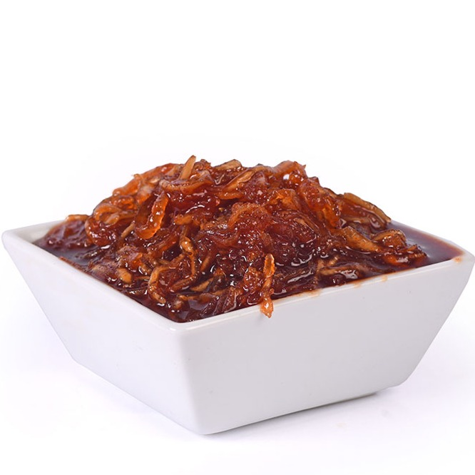

🥭 Chhundo Recipe (Sweet Mango Pickle)

Ingredients
- 2 cups grated raw mango (firm, sour)
- 1.5 cups sugar (adjust to taste)
- 1 tsp salt
- 1 tsp red chili powder
- 1/2 tsp turmeric powder
- 1/2 tsp cumin seeds (optional)
- 1/4 tsp asafoetida (hing)
Instructions
- Peel and grate raw mango. Mix with salt and turmeric. Let it rest for 30 minutes.
- Add sugar to the grated mango and stir until it starts to dissolve.
- Keep the mixture in sunlight (covered with a muslin cloth) for 4–5 days, stirring daily.
- Once the sugar forms a thick syrup and the mango softens, mix in chili powder, cumin, and asafoetida.
- Store in a clean, dry glass jar. Keep refrigerated or in a cool place.
Serve With
- Thepla or paratha
- Puri and khichdi
- As a side with traditional Gujarati meals
💡 Tip: Use clean, dry utensils and jars to prevent spoilage.